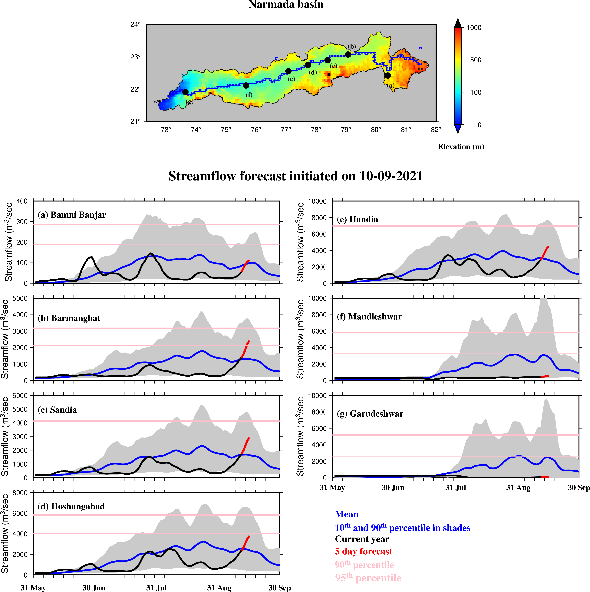
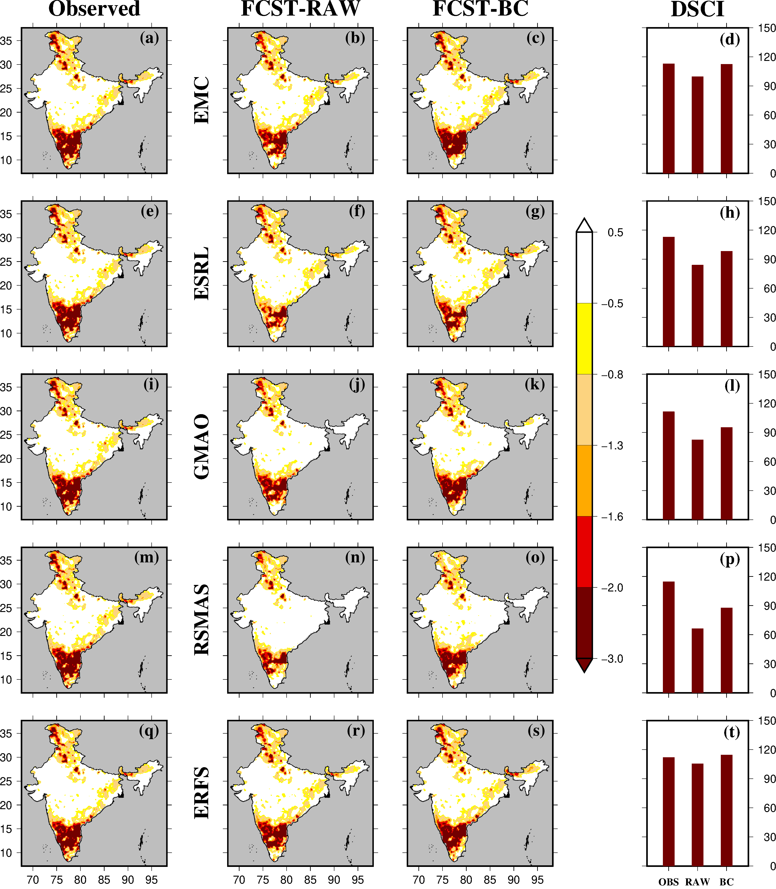

will harness big data, including from satellite remote sensing, ground-based sensors, and IoT networks to streamline real-time observations of the AWT into the DT, and capture the historical (past four decades) and current state of the atmosphere (temperature & precipitation), hydrosphere (surface & subsurface water systems), cryosphere (glaciers), and geosphere (land use & land cover and soils), feeding directly into the modeling framework to drive, constrain, and validate its components (elaborated below). Lead: Qi; Collaborators: Mantha, Pokhrel, Tan, and Research Accociate-1 (RA-1; TBD).
Thrust 2 :Integrated WEF Nexus Modeling
will model the hydrological, agricultural, and ecological systems of the AWT at the hyper-resolution scale (100 m-1 km; [24,25]), capturing the key interactions among the previously mentioned spheres. The modeling framework will account for the complex dynamics of climatic (e.g., temperature rise, glacier melt, and changes in monsoon dynamics) and human (e.g., population growth, land use change and deforestation, agricultural intensification, hydropower development, migration and resettlement, and water governance) drivers, capturing the transboundary complexities in WEF dynamics. The framework will form the core of the AWT-DT. Lead: Pokhrel; Collaborators: Aho, Mantha, Pueppke, Qi, Tarabara, and RA-1.
3. Hydrological modeling
Publication:
i) Multimodel assessment of water budget in Indian sub-continental river basins (link).
4. Flood monitoring

Publications:
i) Influence of Bias Correction of Meteorological and Streamflow Forecast on Hydrological Prediction in India (link).
ii) On the occurrence of the observed worst flood in Mahanadi River basin under the warming climate (link).
iii) A Bayesian hierarchical model combination framework for real-time daily ensemble streamflow forecasting across a rainfed river basin (link).
iv) The Kerala flood of 2018: combined impact of extreme rainfall and reservoir storage (link).
5. Drought monitoring

Publications:
i) Sub-Seasonal Prediction of Drought and Streamflow Anomalies for Water Management in India (link).
ii) Drought and Famine in India, 1870–2016 (link).
iii) Prediction of Reservoir Storage Anomalies in India (link).
6. Heatwave and vulnerability
Publication:
i) Warming climate and ENSO variability enhance the risk of sequential extremes in India (link).